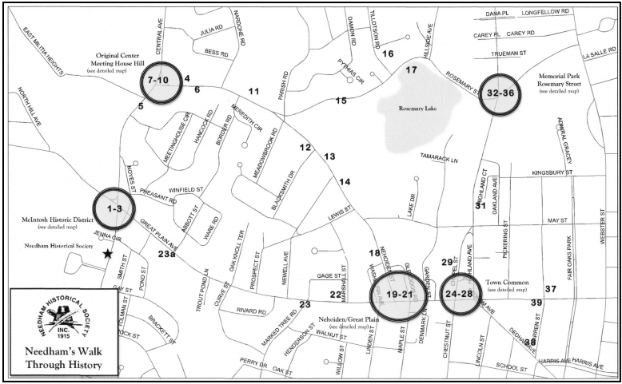

The Needham Historical Walk App
The Needham Historical Walk App joins the old with the new, providing a journey through Needham's fascinating history right at your fingertips.
Check out the interactive map:
Each  represents a historical site.
represents a historical site.
Check out the search page to see a list of Needham's historical sites.
Credits:
The WeStory Team
Dianne Lee (Project Lead)
Alison Garrett-Engele
Sarah Garrett-Engele
Zoe Lockhart
Advisory Board
Alison Borrelli (Needham Historical Society)
Jane Chinnaswamy (Needham High School)
Gloria Greis (Needham Historical Society)
Jegoo Lee (JEDLab)
Brent Zajaczkowski (TripAdvisor)